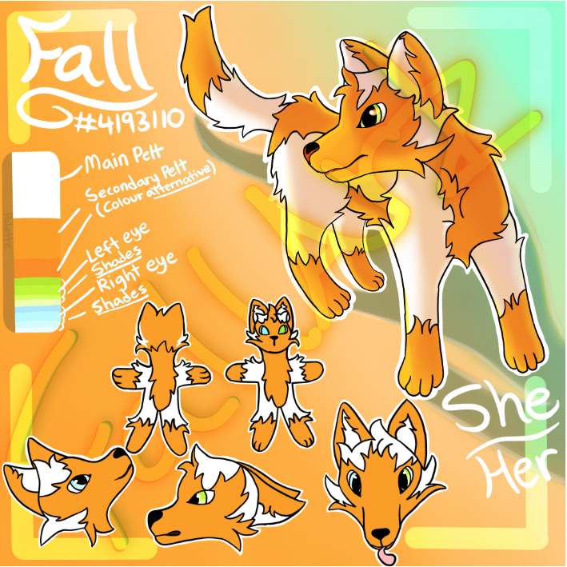

Fall
A young foxling with a shared heritage from both the Foxtail and the Foxheart. As mainly an arctic fox, she's naturally attuned to colder climates, but her red fox heritage allows her to survive and adapt to any habitat.
She grew up in the forest with her mother, Frost (the arctic fox from the Foxtail) and her father, Tree (the red fox from the Foxheart) and her little sibling, Snowpaw.
Fall has a good heart and likes to believe that she is very kind. She strives to be a good fox through her actions, always willing to help. However, she is easily influenced, especially in a bad way. If she's not careful, she can lose the progress she's made.
After her hunt for the Lost Pieces, she lived a quiet life in the forest. But one fateful morning, a white goose was swept downstream by a fierce current. This was her first meeting with Sarky.
Their relationship is chaotic, to say the least. Fall's gentle nature encourages her to look after Sarky. The silly goose is adamant in his chaotic ways. With Sarky, she feels understood.
The pair can often be seen relaxing by the same river that delivered Sarky unto her paws.